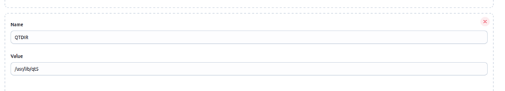
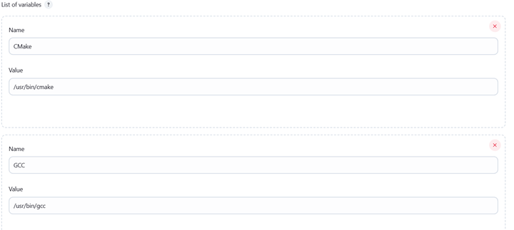
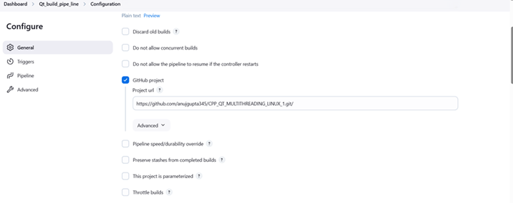
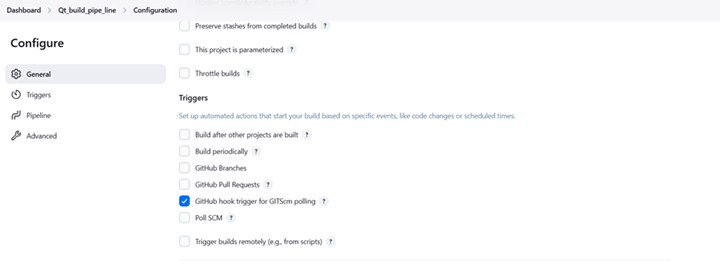
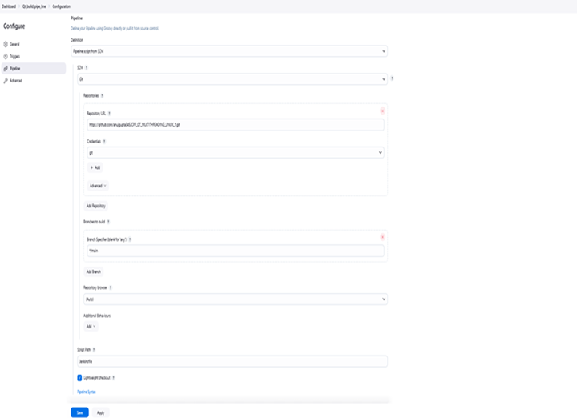
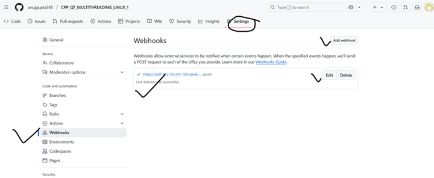
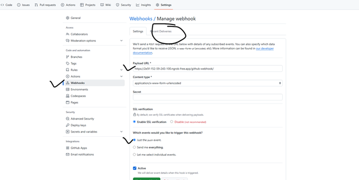

Basic Setup of Jenkins for CI/CD
Introduction
Jenkins is a widely used open-source automation server that facilitates continuous integration and continuous deployment (CI/CD). This guide provides a step-by-step approach to installing, configuring, and troubleshooting Jenkins on a Linux-based system.
1. Installing Jenkins
Prerequisites
Ensure that your system is up to date before installing Jenkins:
sudo apt update && sudo apt install -y openjdk-11-jdkDownload and Install Jenkins
Execute the following commands to install Jenkins:
wget -q -O - https://pkg.jenkins.io/debian-stable/jenkins.io.key | sudo tee /usr/share/keyrings/jenkins-keyring.asc > /dev/nullecho "deb [signed-by=/usr/share/keyrings/jenkins-keyring.asc] https://pkg.jenkins.io/debian-stable binary/" | sudo tee /etc/apt/sources.list.d/jenkins.list > /dev/nullsudo apt update && sudo apt install -y jenkins
Start and Enable Jenkins
Run the following commands to start Jenkins and enable it to launch on startup:
sudo systemctl start jenkinssudo systemctl enable jenkinsCheck Jenkins Status
To verify that Jenkins is running correctly:
sudo systemctl status jenkins
2. Installing Required Plugins
To fully utilize Jenkins, install the necessary plugins:
1. Navigate to Manage Jenkins > Manage Plugins
2. Install the following:
o Git Plugin
o Pipeline Plugin
o Qt Integration Plugin (if available)

To ensure Qt is installed:
sudo apt install -y qtbase5-dev qtchooser qt5-qmake qttools5-dev-toolsqmake --version3. Configuring Git Repository for Jenkins
Setting Remote Repository
git remote -vgit remote set-url origin https://github.com/new-repo.git
4. Configuring Firewall and External Access
Allow Jenkins Through Firewall
sudo ufw allow 8080/tcpsudo ufw reloadAccessing Jenkins from a Remote System
Find your public IP:
curl ifconfig.meAccess Jenkins via:
http://<your-public-ip>:8080
Configure Jenkins for External Access
Edit the Jenkins configuration file:
sudo nano /etc/default/jenkinsModify the HTTP_HOST setting:
HTTP_HOST=0.0.0.0Restart Jenkins:
sudo systemctl restart jenkins5. Setting Up Ngrok for External Access
Running Ngrok
ngrok http 8080Copy the Forwarding URL from
Ngrok (e.g., https://xyz.ngrok-free.app).
Configuring GitHub Webhook
1. Navigate to GitHub → Repository → Settings → Webhooks.
2. Click Add Webhook.
3. Set the Webhook URL to:
4.https://xyz.ngrok-free.app/github-webhook/
5. Choose application/json as the content type.
6. Select Just the push event.
7. Click Add Webhook (Ensure status turns green ✅).

6. Setting Up Jenkins Pipeline with GitHub
Creating a Jenkinsfile
Create a file named Jenkinsfile in your repository root with the
following content:
pipeline { agent any stages { stage('Checkout') { steps { git 'https://github.com/anujgupta345/CPP_QT_MULTITHREADING_LINUX.git' } } stage('Build') { steps { sh 'export QTDIR=/usr/lib/qt5' sh 'export PATH=$QTDIR/bin:$PATH' sh 'qmake IPC.pro' sh 'mkdir -p build' sh 'make clean && make -j$(nproc)' } } stage('Archive Artifacts') { steps { archiveArtifacts artifacts: 'build/Desktop_Qt_6_8_3-Debug/IPC', fingerprint: true } } stage('Deploy') { steps { sh 'chmod +x build/Desktop_Qt_6_8_3-Debug/IPC' sh 'mkdir -p $WORKSPACE/build' sh 'cp build/Desktop_Qt_6_8_3-Debug/IPC $WORKSPACE/build' sh 'echo "Application deployed successfully!"' } } stage('Run Application') { steps { sh 'nohup $WORKSPACE/build/IPC >$WORKSPACE/build/app.log 2>&1 &' } } }}Push the Jenkinsfile to your GitHub repository in the root
folder.

7. Additional Jenkins Configuration
Modify Manage Jenkins → Configure System settings as needed.
Update your .bashrc file if environment variables are
required.
8. Troubleshooting Steps
Checking Logs
sudo journalctl -u jenkins -fVerifying Jenkins is Running on Port 8080
ss -tulnp | grep 8080Checking Firewall Rules
sudo ufw statusSetting Up Ngrok on Linux
1. Run Ngrok:
2.ngrok http 8080
3.
Copy the Forwarding URL (e.g., https://d776-2409-40f2-216c.ngrok-free.app).
4. Use this URL in your GitHub Webhook Settings.
5.
Access Jenkins
externally without using localhost.
Conclusion
By following this guide, you will have a fully functional Jenkins CI/CD pipeline integrated with GitHub. The setup ensures seamless automation for your Qt-based projects, including building, testing, and deploying applications efficiently.
Need Help?
If you encounter any issues, refer to Jenkins logs and firewall settings or reconfigure Ngrok. For advanced configurations, consult Jenkins Documentation.






